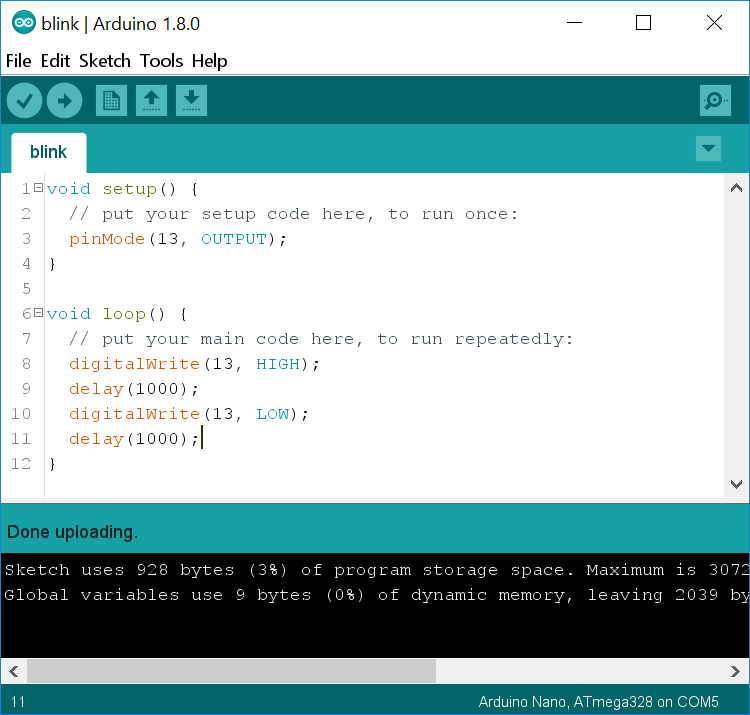

One of the advantages of programming with the Arduino platform is
that you can often see immediate results from your code. We're
going to create a program that causes LEDs to blink, both on the
board itself and on a separate breadboard.
Get an Arduino from the table at the back of the room and a USB-A
to USB-B cable. Connect it to your laptop and open the Arduino
IDE. If it does not automatically open an empty sketch (program)
then go to the File menu and select New. Make sure
you have the correct port selected.
Raise your hand and have Mr. Olinda verify this checkpoint.
For the program to work, you need to designate one pin as an output pin. The Arduino Uno has a built-in LED attached to pin 13, which is what we will use for now. On line three of your empty program, press Tab and type:
pinMode(13, OUTPUT);
This tells the board to set pin 13 to output. Go to the Tools
menu and choose Auto Format. Then verify your code to make
sure you haven't made any syntax errors. At this point your code
won't do anything, so do not upload it yet. Just save it as blink
in your ~/projects/arduino folder. Then add and
commit it to version control.
What other mode do you think you can set pins to?
Raise your hand and have Mr. Olinda verify this checkpoint.
Now let's add the code that will run continuously as long as your Arduino is powered on. Go to line eight and press Tab. Then type:
digitalWrite(13, HIGH);
delay(1000);
digitalWrite(13, LOW);
delay(1000);
Go to the Tools menu and choose Auto Format. Then verify your code to make sure you haven't made any syntax errors. Save it, and then add and commit it to version control. Then upload it and see if the orange LED blinks on and off. If so, you've entered the code correctly. If not, go back and check each line.
What part or parts of your code do you think turns on the light?
What part or parts turns it off? What part or parts control the
duration of the blink? What unit do you think is used to measure
time?
Raise your hand and have Mr. Olinda verify this checkpoint.
Raise your hand and have Mr. Olinda verify this checkpoint.
Raise your hand and have Mr. Olinda verify this checkpoint.
Go ahead and add comments on each line of code, explaining what
you think each line does. Comments are preceded by //
so that the compiler knows they're not supposed to be code. You
can add comments after code or on their own lines.
Raise your hand and have Mr. Olinda verify this checkpoint.
Checkpoint 7: External LED Setup
Now we are going to modify the program to turn an external LED on
and off. Go to the supply bin and get a breadboard, two wires, a
1K resistor (black, red, and gold stripes), and a red LED.
Breadboards are small, rectangular pieces of plastic with holes in
them where you can quickly add and remove wires and other parts to
try out different circuits. The wires will carry the current from
the board to the LED, and the resistor simply protects the LED
from overheating.
Then, unplug and set up your Arduino to match the diagram below.
Make sure you use exactly the same pins as the diagram. Notice
that one of the pins on the LED is longer. That pin is bent in the
diagram.

If you plug your Arduino back in, you'll notice it does not do
anything new. Go ahead and edit your code to make the external LED
blink. Once it does, save your code, and add and commit it to
version control.
Raise your hand and have Mr. Olinda verify this checkpoint.
Get a resealable bag from the back table and write your name on it in permanent marker. Then place your Arduino, USB cable, breadboard, wires, resistor, and LED inside and place the bag on the back table.
Then push your finished code to your remote repository.
Raise your hand and have Mr. Olinda verify this checkpoint.
Write a short blog post summarizing what you accomplished today. At the end, write some ideas that you would like to try with your Arduino. Your post should be two paragraphs, three to five sentences each.
Raise your hand and have Mr. Olinda verify this checkpoint.